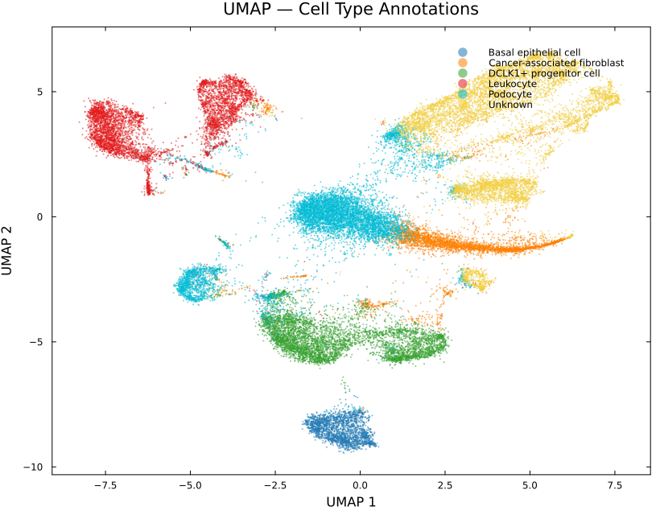
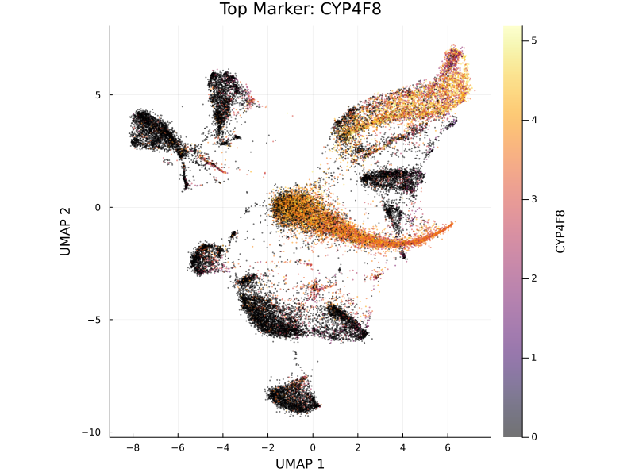
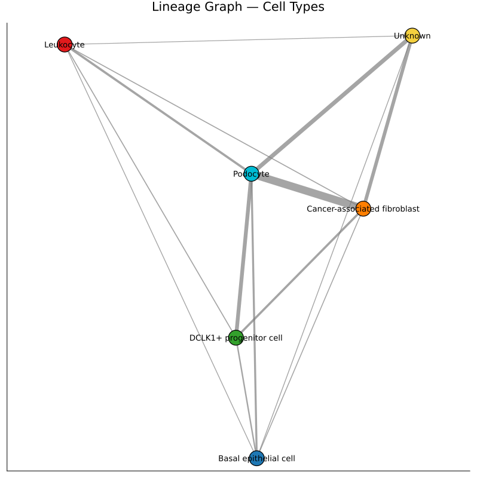
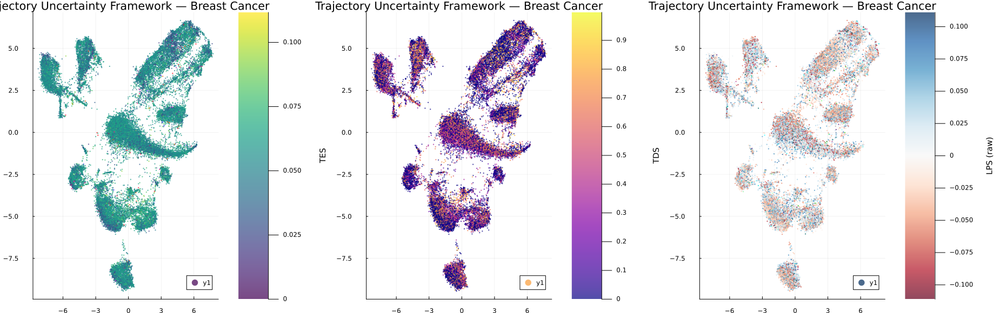
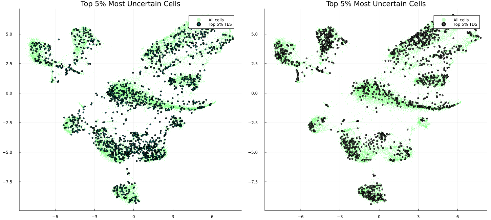

Case Study: Breast Cancer Tumor Microenvironment Analysis with SiCell.jl
Overview
This case study demonstrates the application of SiCell.jl to a large-scale breast cancer single-cell RNA sequencing dataset containing 34,144 cells. The analysis covers the complete workflow from preprocessing and cell type annotation to trajectory inference and the Trajectory Uncertainty Framework (TUF).
The goal is to identify cellular populations within the tumor microenvironment, reconstruct potential developmental transitions, and quantify regions of cellular plasticity and lineage ambiguity using Temporal Entropy Score (TES), Trajectory Divergence Score (TDS), and Local Progression Score ().
1. Cell Population Identification
After quality control, normalization, dimensionality reduction, and clustering, SiCell identified eight initial clusters.
Marker-based annotation using the CellMarker database revealed the following major cell populations:
| Cell Type | Number of Cells |
|---|---|
| Podocyte | 8,486 |
| DCLK1+ progenitor cells | 5,660 |
| Leukocytes | 5,511 |
| Cancer-associated fibroblasts | 3,916 |
| Basal epithelial cells | 2,319 |
| Unknown populations | 8,252 |
The presence of multiple Unknown populations highlights the complexity of the tumor microenvironment and may represent poorly characterized, transitional, or disease-specific cell states.
UMAP Visualization of Annotated Cell Types

UMAP embedding colored by CellMarker-based cell type annotations. Distinct immune, stromal, epithelial, and progenitor-like populations can be observed across the tumor landscape.
2. Marker Gene Characterization
Differential expression analysis identified cluster-specific marker genes that define the molecular identity of individual populations.
Representative markers included:
- CYP4F8
- INHBA
- RGS16
- ADGRD2
- OVCH2
- IRX4
- HPN
- LRRC31
- PODXL
- PTPRC
These genes provide molecular signatures distinguishing tumor-associated fibroblasts, immune populations, epithelial states, and other specialized cellular compartments.
Feature Expression Example

Feature plot showing the expression pattern of the marker gene CYP4F8 across the breast cancer cellular landscape.
3. Connectivity Analysis of the Tumor Microenvironment
SiCell generated a PAGA-style connectivity graph to summarize relationships between major cell populations.
Strong connectivity was observed between several stromal and progenitor-associated populations, including:
- Cancer-associated fibroblasts ↔ Podocytes
- Podocytes ↔ DCLK1+ progenitor cells
- Podocytes ↔ Unknown populations
These connections suggest potential transcriptional similarity or shared transitional states between different cellular compartments.
Cell Population Connectivity Graph

Population-level connectivity graph showing transcriptional relationships between annotated cell types.
4. Diffusion-Based Trajectory Inference
To investigate continuous cellular transitions, a diffusion map was constructed using the nearest-neighbor graph.
A DCLK1+ progenitor population was selected as the trajectory root due to its stem-like characteristics.
Diffusion pseudotime ordering revealed how cells transition away from this progenitor-like state toward more differentiated transcriptional programs.
5. Trajectory Uncertainty Framework (TUF)
Traditional pseudotime methods assign a trajectory position to each cell but do not quantify whether the local trajectory is stable or ambiguous.
SiCell's TUF addresses this using three complementary metrics:
TES (Temporal Entropy Score) Measures local temporal mixing between neighboring cells.
TDS (Trajectory Divergence Score) Measures disagreement between forward developmental directions and identifies potential branching regions.
Global Trajectory Uncertainty
Across 34,144 cells:
| Metric | Mean | Maximum |
|---|---|---|
| TES | 0.054 | 0.112 |
| TDS | 0.247 | 0.997 |
The high maximum TDS value suggests the presence of strongly divergent regions within the tumor trajectory landscape.
TUF Visualization

Visualization of TES, TDS across the cellular manifold. High uncertainty regions may correspond to cell-state transitions, branching trajectories, or plastic tumor populations.
6. Cell-Type Level Trajectory Uncertainty
Average uncertainty scores revealed differences in cellular plasticity between populations.
| Cell Type | Mean TES | Mean TDS |
|---|---|---|
| DCLK1+ progenitor | 0.055 | 0.238 |
| Podocyte | 0.055 | 0.241 |
| Cancer-associated fibroblast | 0.054 | 0.293 |
| Basal epithelial | 0.054 | 0.253 |
| Unknown | 0.053 | 0.215 |
| Leukocyte | 0.052 | 0.278 |
Notably, cancer-associated fibroblasts exhibited the highest average TDS, indicating greater directional heterogeneity and potential involvement in dynamic remodeling of the tumor microenvironment.
7. Validation of High-Uncertainty Regions
Cells within the top 5% of TES scores were extracted and analyzed using differential expression.
The most enriched genes included:
| Gene | Biological Association |
|---|---|
| AEBP1 | Extracellular matrix remodeling |
| COL5A1 | Collagen organization |
| COL6A3 | Stromal activation |
| DCN | Fibroblast identity |
| CCN2 | Tissue remodeling and fibrosis |
| FN1 | Cell adhesion and migration |
| ELN | Extracellular matrix organization |
The enrichment of extracellular matrix and stromal remodeling genes supports the biological relevance of high-TES regions.
High-Uncertainty Cell Localization

Cells with the highest TES scores highlighted on the UMAP embedding. These regions may represent highly plastic cellular states and active tumor remodeling zones.
8. Relationship Between TUF Metrics
Correlation analysis showed that the three uncertainty measures capture related but distinct biological properties.
| Comparison | Correlation |
|---|---|
| TES ↔ TDS | 0.313 |
| TES ↔ | 0.262 |
| TDS ↔ | 0.763 |
The moderate TES–TDS correlation demonstrates that temporal mixing and directional divergence provide complementary information rather than measuring the same phenomenon.
Biological Insights
This analysis demonstrates that SiCell can move beyond traditional clustering and pseudotime analysis by identifying regions of cellular instability and potential fate transitions.
Key observations include:
- DCLK1+ progenitor cells display elevated trajectory uncertainty, consistent with a more plastic and less committed cellular state.
- Cancer-associated fibroblasts exhibit the strongest directional divergence, suggesting dynamic remodeling behavior.
- High-TES cells are enriched for extracellular matrix and stromal activation genes such as COL5A1, COL6A3, CCN2, and FN1.
- TES, TDS capture complementary aspects of tumor heterogeneity.
Conclusion
Using a single integrated workflow, SiCell.jl transformed a 34,144-cell breast cancer dataset into interpretable biological insights.
The combination of clustering, automated annotation, trajectory inference, and the Trajectory Uncertainty Framework enables researchers to identify not only where cells are along a trajectory, but also how confidently that trajectory can be interpreted.
This provides a powerful framework for studying tumor plasticity, cellular transitions, and the dynamic organization of complex tissues.
Complete analysis script: examples/case_study_breast_cancer.jl